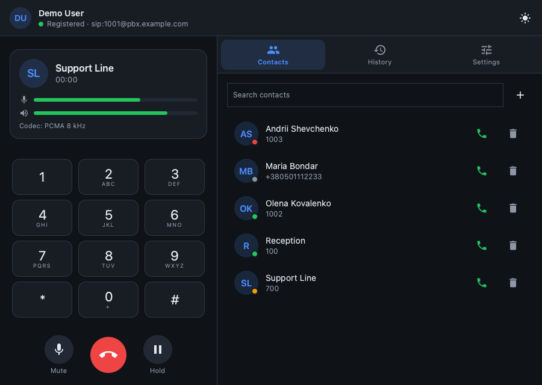
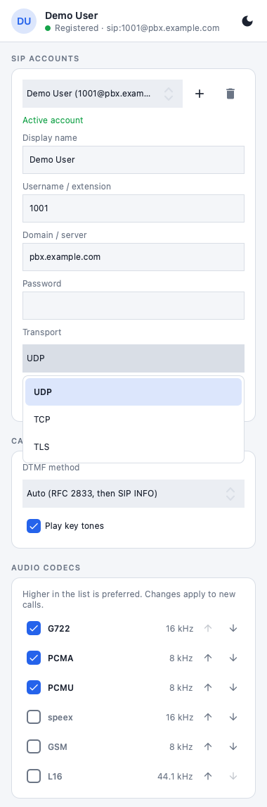

A quiet, simple SIP softphone
Make and take calls through your office PBX or SIP provider. Lightweight, free and open source — for Windows and macOS.
Everything you need for daily calls
And nothing that gets in the way.
Calls that just work
SIP over UDP and TCP, hold, mute and a compact dial pad. Several accounts, switched in one click.
Voice menus
DTMF with RFC 2833 and automatic SIP INFO fallback. Type digits right from the keyboard.
Never miss a call
Incoming calls pop up above other windows, even when the app waits in the tray.
See your audio
Live microphone and speaker meters and the active codec during every call.
Your codecs, your order
G.722 and G.711 out of the box; enable, disable and reorder any supported codec.
Contacts and history
Search your contacts and call back from the history of incoming, outgoing and missed calls.
Light and dark
Follows your system theme or stays the way you choose. Compact or wide window.
Free and open
GPL-3.0 licensed. No ads, no sign-up, no telemetry.
A closer look
The wide layout keeps the dial pad and your lists side by side.


Download
Unzip and run — no installer needed.
Windows
Windows 10 or 11, 64-bit
Download for WindowsThe app is not code-signed yet. If SmartScreen warns you, choose “More info” → “Run anyway”.
macOS
macOS 13 or newer, Apple Silicon (M1 and later)
Download for macOSMove the app to Applications. On first launch, open System Settings → Privacy & Security and press “Open Anyway”.